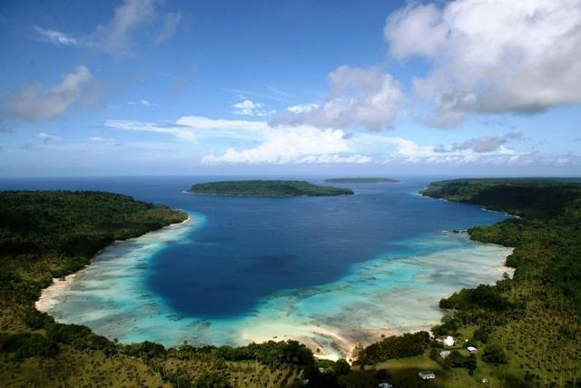
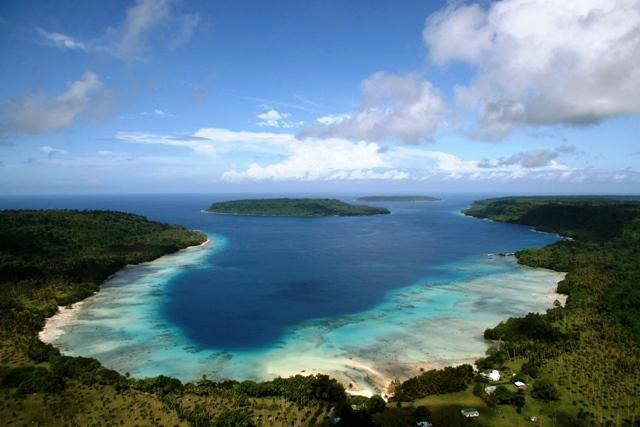

Espiritu Santo, the largest island in Vanuatu, is a tropical paradise known for its stunning Blue Holes, pristine beaches like Champagne Beach and Port Olry, and rich World War II history. Adventure seekers can explore lush rainforests, cascading waterfalls, and hidden caves, while history enthusiasts can discover remnants of the island's wartime past. With warm Ni-Vanuatu hospitality and endless opportunities for outdoor exploration, Espiritu Santo offers an unforgettable experience in the heart of the South Pacific.
 

For those seeking adventure on Espiritu Santo, the island offers an exciting combination of experiences with the Millenium Cave tour and Santo Horse Adventures. The Millenium Cave tour provides a thrilling journey through dense jungle, vast cave systems, and along a scenic river, featuring hiking, caving, swimming, and tubing. This challenging yet rewarding adventure showcases the island's stunning natural beauty and diverse landscapes. Complementing this, Santo Horse Adventures offers a unique perspective of Espiritu Santo through horseback riding tours. Riders can traverse beaches, plantations, and scenic trails, enjoying a relaxed exploration of the island's picturesque surroundings. Together, these adventures provide an exhilarating and immersive way to experience the diverse environments and captivating landscapes of Espiritu Santo.